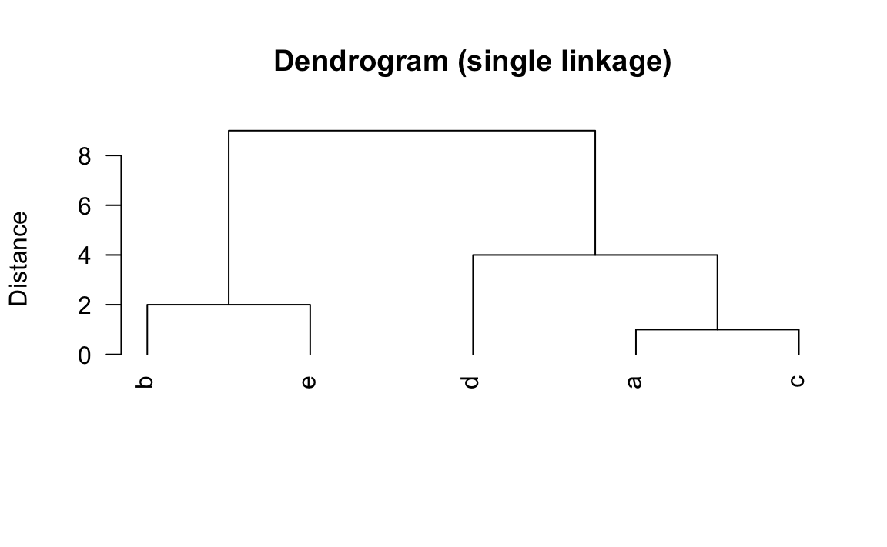

21 Hierarchical Clustering
The idea behind hierarchical clustering is to find nested partitions. There are two approaches:
Agglomerative Methods: this is the method we will discuss below.
Divisive Methods: we will not discus this method, however one can think of it as the opposite of agglomerative methods.
21.1 Agglomerative Methods
Agglomerative Hierarchical Clustering (AHC) produce sequences of nested partitions of increasing heterogeneity.
As with \(K\)-means, we still need a notion of distance between two objects: this notion could be mathematical (i.e. a distance metric), or qualitative (a measure of proximity).
We also need another type of distance: this one will be used to measure how different two clusters are.
The general form of an agglomerative algorithm is as follows:
- The initial clusters are the observations.
- The distances between clusters are calculated.
- The two clusters which are closest together are merged and replaced with a single cluster.
- We start again at step 2 until there is only one cluster, which contains all the observations.
The sequence of partitions is presented in what is known as a tree diagram also known as dendrogram.
This tree can be cut at a greater or lesser height to obtain a smaller or larger number of clusters.
The number of clusters can be chosen by optimizing certain statistical quality criteria. The main criterion is the loss of between-cluster sum of squares.
The distance between two individual observations tends to be obvious:
- Euclidean
- Manhattan
As soon as a cluster has more than one element, the distance between two clusters is less obvious. It can be defined in many ways but the most usual ones are:
Minimum Distance:
- Also known as single linkage or nearest neighbor.
- Sensitive to the ``chain effect’’ (or chaining): if two widely separated clusters are linked by a chain of individuals, they be grouped together.
Maximum distance:
- Also known as complete linkage or farthest-neighbor technique.
- Tends to generate clusters of equal diameter.
- Sensitive to outliers.
Mean Distance:
- Also known as average linkage.
- Intermediate between the minimum distance and the maximum distance methods.
- Tends to produce clusters having similar variance.
Ward method:
- Matches the purpose of clustering most closely.
- Ward distance defined as the reduction in between-cluster sum of squares.
Figure 21.1: Aggregation Criteria
21.2 Example: Single Linkage
Let’s see a toy example. Suppose we have 5 individuals: \(\textsf{a}, \textsf{b}, \textsf{c}, \textsf{d},\) and \(\textsf{e}\), and two variables \(x\) and \(y\), as follows:
x y
a 1 4
b 5 4
c 1 3
d 1 1
e 4 3If we used the squared-euclidean distance as our distance measure, we obtain a matrix of distances like:
a b c d e
a 0 16 1 9 10
b 16 0 17 25 2
c 1 17 0 4 9
d 9 25 4 0 13
e 10 2 9 13 0Here’s a scatterplot of the data set, and the unique distances between individuals:
Figure 21.2: Five objects and their distances
We first look for the pair of points with the closest distance; from our matrix, we see this is the pair \((\textsf{a}, \textsf{c})\). In other words, the first aggregation occurs with objects \(\textsf{a}\) and \(\textsf{c}\). We now treat this pair as a single point, and recompute distances:
Figure 21.3: The two closest objects
We have now four objects: a cluster \(\textsf{ac}\), and three individuals \(\textsf{b}\), \(\textsf{d}\), and \(\textsf{e}\). And here is the interesting part. We know that the distance between \(\textsf{b}\) and \(\textsf{d}\) is 25. Also, the distance between \(\textsf{b}\) and \(\textsf{e}\) is 2. But what about the distance between cluster \(\textsf{ac}\) and \(\textsf{b}\)? How do we determine the distance between a cluster and a point? Well, this is where the two approaches of hierarchical clustering come in. Again, we will consider only agglomerative methods.
Figure 21.4: Distance between a cluster and other objects?
We need an aggregation method to define the distance between a cluster and another object. In single linkage we define the distance between the \((\textsf{ac})\) and \(\textsf{b}\) to be:
\[ d^2(\textsf{ac}, \textsf{b}) = min \{ d^2(\textsf{a},\textsf{b}), d^2(\textsf{c},\textsf{b}) \} \]
For example, in our toy dataset we have:
- \(d^2(\textsf{ac}, \textsf{d}) = \min\{16, 17\} = 16\)
- \(d^2(\textsf{ac}, \textsf{d}) = \min\{9, 4\} = 4\)
- \(d^2(\textsf{ac}, \textsf{e}) = \min\{10, 9\} = 9\)
Figure 21.5: Aggregation Criteria
Once we have the distances, we look for the next pair of objects that are closest to each other. In this case, those objects are \(\textsf{b}\) and \(\textsf{e}\).
Figure 21.6: Second cluster
So now we have two clusters \(\textsf{ac}\) and \(\textsf{be}\), and a third individual object \(\textsf{d}\). The matrix of distances is updated as follows:
Figure 21.7: Second cluster
We then select the smallest distance which corresponds to the distance between cluster \(\textsf{ac}\) and individual \(\textsf{d}\):
Figure 21.8: Third cluster
At this step, we have two clusters left: \(\textsf{acd}\) and \(\textsf{be}\). These two groups have a distance of 9:
Figure 21.9: Three partitions
The last step involves merging both clusters into a single overall cluster:
Figure 21.10: Single cluster with all objects
21.2.1 Dendrogram
The process of forming clusters can be visualized with a dendrogram.
